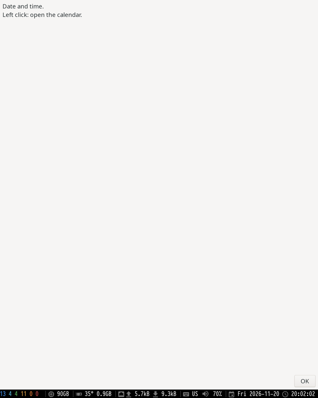
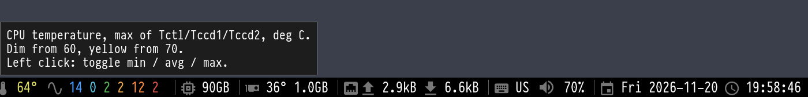

T1: Hover tooltips
Your note (2026-11-18): "tooltips must appear on hover (middle-click popup is only a stopgap)". The spec is written with the recommended answers, so the build can start now; these two choices only change a constant or a small cleanup. Answer in the chat with the line at the bottom.
Today


Question 1: keep the middle-click popups once hover works?
A. Keep middle-click as a fallback recommended
B. Remove middle-click popups
Why the designer is against B: no help at all while the daemon is down, and the block-to-text mapping moves out of config.toml into a second file.
Question 2: hover delay before the popup appears
A. 500 ms, then instant while sliding along the bar recommended
B. 300 ms
Why the designer is against B: popups flash when the pointer only crosses the bar on its way to a window edge or the tray.
C. 800 ms
Why the designer is against C: feels sluggish when you do want the text; the instant sliding already cuts repeat waits.
Picks
What doesn't change
- The bars themselves: same blocks, colours, widths and clicks; the daemon only reads them.
- The popup texts: the same ones as the middle-click popups (scripts/explain.sh).
- Win+i still toggles the bars; no popups while they are off.